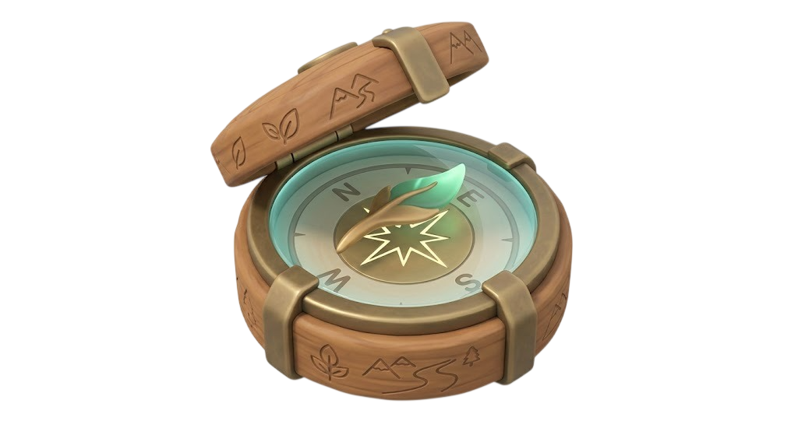

🍃
🍂
🍃
🍁
Aventura Educativa
La Brújula Mágica
La brújula marca el camino. Vos decidís cambiarlo.
Acompañá a Calo en una aventura por Paraguay y ayudá a distintas comunidades a recuperar su equilibrio.

✨
✨
✨
✨